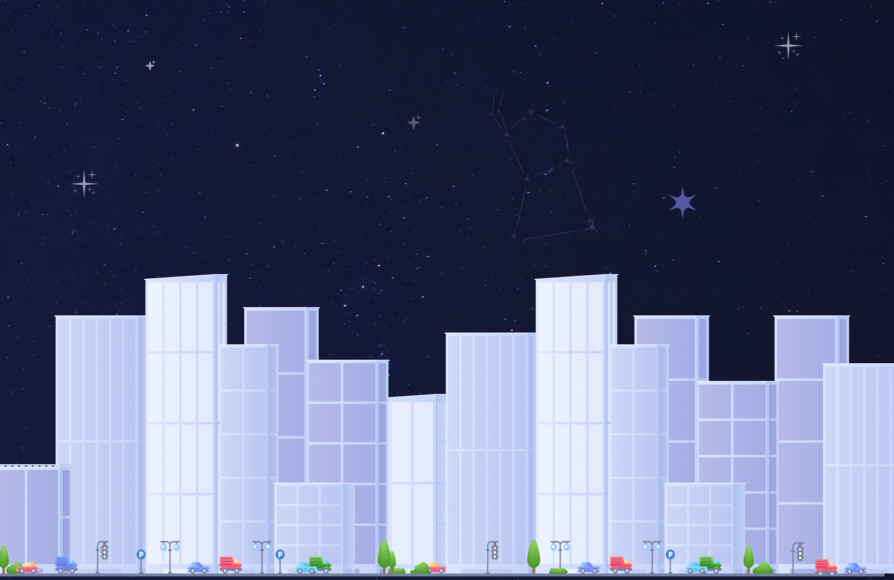
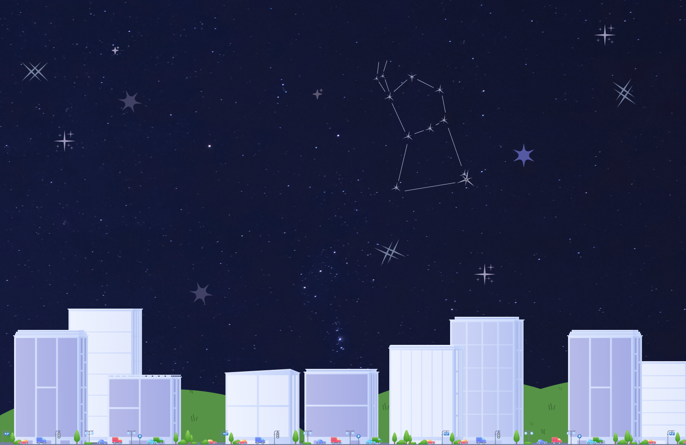

Las constelaciones de mi infancia
Tras el rastro de las estrellas que la ciudad nos obligó a olvidar.
Me presento, soy Jorge. Podría decir muchas cosas sobre mí, pero hay una sola que me define: a mi vida la marcaron las estrellas.
Nací en una pequeña localidad del interior. Me crié con mi amada abuela; ella fue quien me inculcó este amor por las historias que cuentan los cielos.
Todas las noches mirábamos por la ventana y me revelaba los secretos de alguna constelación.
Un día, mis papás me dijeron que por cuestiones de la vida nos mudábamos a Buenos Aires. Yo estaba destruido; no quería alejarme de ella.
La última noche, mi abuela me abrazó y me dijo que cuando la extrañara, mirara a Orión. Que no importaba dónde estuviera, Orión siempre iba a estar ahí para mí, al igual que su amor.
Emprendimos el viaje en la oscuridad de la madrugada. Durante horas pegué la frente contra el vidrio frío del auto, mirando hacia arriba.
Y efectivamente, ahí estaba Orión, escoltándome en el camino tal como me lo había prometido mi abuela. Me quedé mirándola fijamente hasta que el cielo empezó a aclararse y el amanecer ocultó las estrellas.
Esa primera noche en Buenos Aires busqué el cielo con desesperación. No se veía igual. El fondo ya no era negro azabache, sino un gris borroso. Pero haciendo fuerza con los ojos, logré distinguirla. Costaba, pero Orión seguía ahí. Mi abuela no había mentido.
Pasó el tiempo. Me convertí en adulto, pasaron los años, cambiaron los gobiernos, la ciudad creció y se expandió hacia arriba. Cada tanto, en las noches nostálgicas, volvía a ese mismo lugar donde vi la constelación por primera vez en la ciudad.
Hasta que una noche miré hacia arriba y ya no había nada, el cielo estaba completamente vacío. La ciudad finalmente se había robado todo el brillo.
Fueron pasando los años y, mientras el cielo de la ciudad se apagaba, crecía en mí una obsesión: necesitaba entender qué estaba pasando. Necesitaba saber quién se estaba robando las estrellas.
En honor a mi abuela, y a aquella promesa en la ventana, decidí convertir la nostalgia en ciencia: estudié Astronomía.
Como parte de mi investigación, me propuse mapear los cielos argentinos. ¿Era Buenos Aires una excepción o el país entero se estaba quedando a oscuras?
Primer vistazo a los datos
El mapa de los cielos argentinos
Un relevamiento de contaminación lumínica ciudad por ciudad, para responder la pregunta con números.
Ahora ya tenía la teoría, el papel no me era suficiente. Como un buen amante de las estrellas necesitaba verlo con mis propios ojos. Así fue como emprendí un viaje en busca de los mejores cielos Argentinos. Arranqué por comodidad en capital, seguí por Firmat, Junín para terminar en Ushuaia.


Buenos Aires
Magnitud límite: 4.1
Todavía podía encontrar a Orión, pero el resto del cielo parecía haberse desvanecido. Apenas unas pocas estrellas lograban atravesar el brillo de la ciudad.
Firmat
Magnitud límite: 5.4
Al alejarme de la gran ciudad comenzaron a reaparecer estrellas que llevaba años sin ver. El cielo recuperaba profundidad.
Junín de los Andes
Magnitud límite: 6.3
Por primera vez en mucho tiempo sentí que estaba mirando el mismo cielo de mi infancia. La Vía Láctea volvía a ser visible.
Pero ver los cielos con mis propios ojos no era suficiente. Necesitaba entender por qué algunos lugares brillaban más que otros.
¿Era solo la cantidad de gente? ¿O había algo más detrás de todo esto?
Población en Argentina
Analicé 20 ciudades argentinas. Para cada una, tuve en cuenta cuánta gente vivía ahí y cuánta luz artificial emitían de noche hacia el cielo.
La pregunta era simple: ¿a más gente, menos estrellas visibles?
Ciudad Autónoma de Buenos Aires
CABA es el distrito con mayor densidad y concentración poblacional, superando los 3 millones de habitantes.
Firmat, Santa Fe
En líneas generales, sí. Las ciudades más grandes contaminan más lumínicamente. CABA está en el extremo: la más poblada del país es también la que más opaca el cielo nocturno.
Junín, Buenos Aires
Pero Junín me llamó la atención. Una ciudad mediana, sin millones de habitantes, con un índice nocturno mucho más alto de lo esperado. La agroindustria y la energía de la región encienden el cielo aunque no haya tanta gente.
Todas las Regiones
Ahí entendí que no alcanzaba con contar personas. Lo que importa es lo que esas personas hacen de noche — y qué tan eficiente es la luz que usan.
Todas las Regiones
Acá podemos ver la distribución completa de las 19 ciudades de nuestra base de datos, junto a que tan industrializados están.
Los datos me daban un mapa. Pero un mapa sin explicación no sirve de nada.
Para entender por qué pasaba todo esto, necesitaba volver a la física básica.
La contaminación lumínica es la luz artificial que escapa hacia arriba en lugar de iluminar hacia abajo.
Se dispersa en la atmósfera y crea un halo brillante que tapa las estrellas. No la vemos como suciedad. Pero está ahí.
Para medirla, los astrónomos usamos la Escala de Bortle: va del 1 al 9.
En 1, el cielo es tan oscuro que la Vía Láctea proyecta tu propia sombra. En 9, estás en el centro de Buenos Aires y apenas distinguís a Orión.
Mi pueblo natal estaba en 3. Hoy probablemente está en 5.
No es solo un problema para astrónomos nostálgicos.
La luz nocturna desorienta aves migratorias, altera ciclos de insectos, afecta el sueño humano. Estamos iluminando el mundo sin pensar en las consecuencias.
Pero esto no era solo teoría. Lo había visto con mis propios ojos en cada ciudad que visité. Y los números lo confirmaban.
Lo que descubrí en Argentina no era una excepción.
Era parte de algo mucho más grande.
La evolución de la contaminación lumínica en 16 ciudades del mundo entre 2006 y 2024.
Nueva York, Tokio, Londres, El Cairo. No importa el continente ni el idioma.
Donde crece la ciudad, desaparece el cielo.
Fin del trayecto
¡Gracias por scrollear!